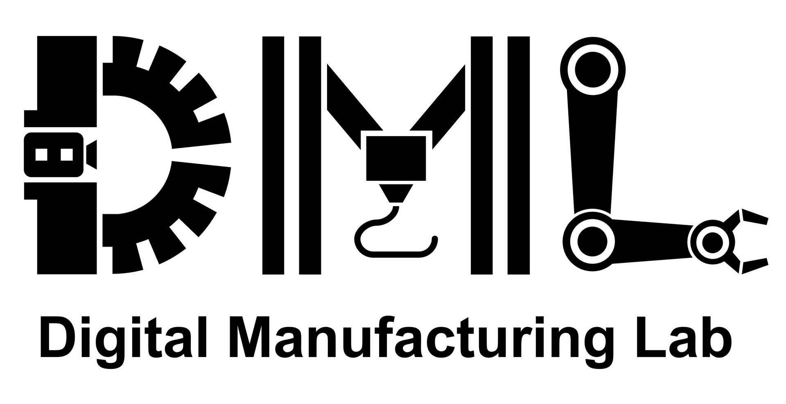

Neural Co-Optimization of Structural Topology, Manufacturable Layers,
and Path Orientations for Fiber-Reinforced Composites
SIGGRAPH 2025
(ACM Transaction on Graphics)
Tao Liu*, Tianyu Zhang*, Yongxue Chen, Weiming Wang, Yu Jiang, Yuming Huang, and Charlie C.L. Wang†
*Joint first authors
†Corresponding author